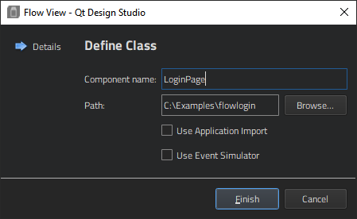
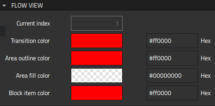
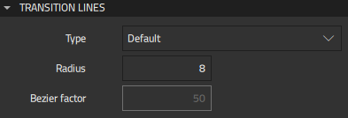

Adding Flow Views
You can add a flow view to an existing project or create a new project for it, as described in Creating Projects.
To create the flow view, select File > New File > Qt Quick Files > Flow View and follow the instructions of the wizard.

You only need to select the Use Event Simulator check box if you want to add an event simulator to the flow view. The event simulator needs the project to be imported to the flow view, so you also need to select the Use Application Import check box. You need the import also for access to the project Constants.qml file that contains global settings for the project.
The flow view properties enable you to adjust the appearance of all the items in the flow: action areas, transition lines, decisions, and wildcards. You can change the global settings for all items by editing flow view properties, or you can select an individual action area or transition line and change the appearance of just that component, including the color, line thickness, dotted or solid lines, and even the curve of the line. This enables you to add extra semantics to the design of the flow diagram itself.
You can add flow items to the flow view to design the UI.
Flow View Properties
You can specify basic properties for a Flow View component in the Component, Geometry - 2D, and Visibility sections in the Properties view. Specify flow view properties in the Flow View section.

To specify the Flow Item that is currently visible in the flow view, set its index in the Current index field.
You can use the color picker to set colors for:
- Transition lines
- Area outlines
- Area fills
- Block items
You can set some additional global properties for drawing transition lines:

- In the Type field, select Bezier to draw transition lines as bezier curves.
- In the Radius field, specify the corner radius for default curves.
- In the Bezier factor field, specify the factor that modifies the positions of the control points used for bezier curves.
For more information about changing the appearance of a particular action area or transition line, see Flow Action Area Properties and Flow Transition Properties.
In the Layout tab, you can use anchors to position the component.
In the Advanced section, you can manage the more advanced properties of components.